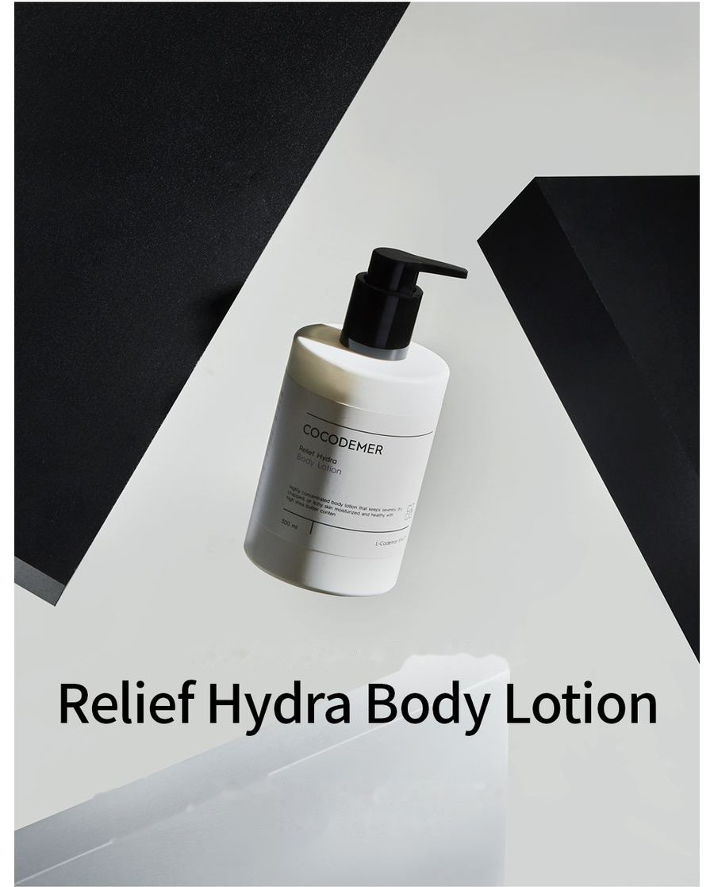
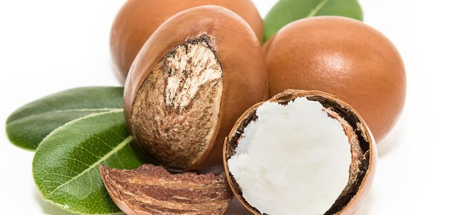

COCODEMER Relief Hydra Body Lotion
| Contenance | 300ml |
|---|---|
| Convient à | Tous types de peau |
| Technologie clé | L-CODEMAR ELIXIR™ |
| Fabricant · Distributeur responsable | JUNGCOS CO., LTD. / COCODEMER CO., LTD. |
Ce produit a été développé dans le cadre de notre gamme de cosmétiques sur mesure. Il n'est actuellement pas disponible à la vente. Pour toute demande concernant une nouvelle production ou un renouvellement du produit, veuillez passer par la rubrique Demande B2B.

Une lotion pour le corps très hydratante pour peaux sèches et sensibles
Une lotion pour le corps très hydratante qui apaise et ressource la peau sensibilisée
Un voile d'hydratation formé par divers ingrédients hydratants limite au minimum la perte en eau et maintient l'hydratation plus longtemps.
Une forte concentration de beurre de karité prend soin de la peau devenue sensible et sujette aux démangeaisons à cause de la sécheresse, la rendant plus hydratée et plus saine.
Le Ceramide NP, de structure proche des composants naturels de la barrière cutanée, aide à renforcer une barrière altérée.

8 % d'huiles nourrissantes (huile de noyau d'argan, huile de graines de thé vert, huile d'amande douce) et 8 % d'ingrédients hydratants hydrosolubles (eau de coco, extrait de centella asiatica, extrait de figue, extrait de miel) sont stabilisés ensemble. Résultat : une formule très hydratante qui s'étale pourtant en douceur, sans effet collant.
Sur la peau rendue rêche par la sécheresse, une forte concentration de beurre de karité forme une barrière d'hydratation qui redonne dès la première utilisation un grain de peau hydraté et sain. Des ingrédients végétaux tels que l'Apple Mint Leaf Extract, le Sage Leaf Extract et le Rosemary Leaf Extract apaisent et hydratent la peau sensible.
* Les informations ci-dessus s'appliquent uniquement à l'ingrédient concerné.
Code de l'actif clé
- CaCentella AsiaticaApaisement de la peau
- MoHydratationHydratant
- CnCeramide NPRenforcement de la barrière
- PnPanthenolPrévient la sécheresse
Le beurre de karité, un hydratant issu de la nature, à une teneur élevée de 11 % — il aide à atténuer la sécheresse et les démangeaisons et à améliorer le grain de peau, et remplit la peau d'hydratation sans irritation.
Le Ceramide NP, de structure proche des composants naturels de la barrière cutanée, aide à renforcer une barrière altérée.
* Les informations ci-dessus concernent les ingrédients, et non le produit fini.
Voir la fiche ingrédient →
① L-CODEMAR ELIXIR™
Technologie propriétaire de COCODEMER.
Notre technologie inégalée d'encapsulation par émulsion nano-gel multicouche maintient les actifs clés — eau de coco, phytostérols, 20 acides aminés et extrait de miel — en un complexe stable. Ce complexe est ensuite intégré dans une forme liposomale respectueuse de la peau, qui reproduit la structure même de la peau, afin de maximiser l'efficacité de la diffusion dans la peau.
L-Codemar Elixir™ renforce la cohésion entre les cellules cutanées. Il restaure une barrière altérée et forme un film protecteur résistant, pour une hydratation plus durable.

Texte de l'image ci-dessus
L-CODEMAR ELIXIR™
- EAU DE COCO
- EXTRAIT DE MIEL
- 20 TYPES D'ACIDES AMINÉS
- PHYTOSTÉROL

Texte de l'image ci-dessus
- Microbes, particules fines, poussières jaunes, polluants et pollution de l'air
- Perte en eau excessive
Peau abîmée
Des lipides intercellulaires endommagés affaiblissent les liaisons entre les cellules de l'épiderme
- Apport de lipides intercellulaires ↑
- Actifs
- Protège contre les agressions extérieures et les polluants
- Moins de perte en eau
Peau saine
Les lipides reconstitués restaurent la matrice intercellulaire → liaisons intercellulaires renforcées
Mode d'emploi
- Tournez la pompe dans le sens inverse des aiguilles d'une montre et appuyez.
- Prélevez une quantité appropriée et massez uniformément sur le corps.
- Si nécessaire, appliquez une couche supplémentaire sur les zones sèches ou là où vous souhaitez que le parfum persiste.
Une lotion pour le corps très hydratante qui apaise et ressource la peau sensibilisée
Un voile d'hydratation formé par divers ingrédients hydratants limite au minimum la perte en eau et maintient l'hydratation plus longtemps.
Une forte concentration de beurre de karité prend soin de la peau devenue sensible et sujette aux démangeaisons à cause de la sécheresse, la rendant plus hydratée et plus saine.
Le Ceramide NP, de structure proche des composants naturels de la barrière cutanée, aide à renforcer une barrière altérée.
8 % d'huiles nourrissantes (huile de noyau d'argan, huile de graines de thé vert, huile d'amande douce) et 8 % d'ingrédients hydratants hydrosolubles (eau de coco, extrait de centella asiatica, extrait de figue, extrait de miel) sont stabilisés ensemble. Résultat : une formule très hydratante qui s'étale pourtant en douceur, sans effet collant.
Sur la peau rendue rêche par la sécheresse, une forte concentration de beurre de karité forme une barrière d'hydratation qui redonne dès la première utilisation un grain de peau hydraté et sain. Des ingrédients végétaux tels que l'Apple Mint Leaf Extract, le Sage Leaf Extract et le Rosemary Leaf Extract apaisent et hydratent la peau sensible.
Le beurre de karité, un hydratant issu de la nature, à une teneur élevée de 11 % — il aide à atténuer la sécheresse et les démangeaisons et à améliorer le grain de peau, et remplit la peau d'hydratation sans irritation.
Le Ceramide NP, de structure proche des composants naturels de la barrière cutanée, aide à renforcer une barrière altérée.
* Les informations ci-dessus concernent les ingrédients, et non le produit fini.
① L-CODEMAR ELIXIR™
Technologie propriétaire de COCODEMER. Notre technologie inégalée d'encapsulation par émulsion nano-gel multicouche maintient les actifs clés — eau de coco, phytostérols, 20 acides aminés et extrait de miel — en un complexe stable. Ce complexe est ensuite intégré dans une forme liposomale respectueuse de la peau, qui reproduit la structure même de la peau, afin de maximiser l'efficacité de la diffusion dans la peau. L-Codemar Elixir™ renforce la cohésion entre les cellules cutanées. Il restaure une barrière altérée et forme un film protecteur résistant, pour une hydratation plus durable.
① Tournez la pompe dans le sens inverse des aiguilles d'une montre et appuyez. ② Prélevez une quantité appropriée et massez uniformément sur le corps. ③ Si nécessaire, appliquez une couche supplémentaire sur les zones sèches ou là où vous souhaitez que le parfum persiste.
| Contenu net (volume ou poids) | 300ml |
|---|---|
| Convient à | Tous types de peau |
| Durée de conservation / durée d'utilisation après ouverture | 30 mois à compter de la date de fabrication ; à utiliser dans les 12 mois suivant l'ouverture |
| Mode d'emploi | Prélevez une quantité appropriée et massez uniformément sur le corps. Appliquez à nouveau si nécessaire sur les zones plus sèches ou là où vous souhaitez que le parfum persiste. |
| Fabricant de cosmétiques | JUNGCOS CO., LTD. |
| Distributeur responsable | COCODEMER CO., LTD. |
| Pays d'origine | République de Corée |
| Liste complète des ingrédients (INCI) | Cocos Nucifera (Coconut) Water, Butyrospermum Parkii (Shea) Butter, Dimethicone, Glycerin, Methylpropanediol, Butylene Glycol, 1,2-Hexanediol, Polysorbate 60, Betaine, Cetearyl Alcohol, Cetyl Alcohol, Hydrogenated Poly(C6-14 Olefin), Triethylhexanoin, Fragrance (Parfum), Hydroxyethyl Acrylate/Sodium Acryloyldimethyl Taurate Copolymer, Ceteareth-25, Isopropyl Isostearate, Octyldodecyl Myristate, Honey Extract, Water, Glyceryl Stearate, PEG-100 Stearate, Centella Asiatica Extract, Ficus Carica (Fig) Fruit Extract, Argania Spinosa Kernel Oil, Camellia Sinensis Seed Oil, Limnanthes Alba (Meadowfoam) Seed Oil, Panthenol, Prunus Amygdalus Dulcis (Sweet Almond) Oil, Tocopheryl Acetate, Ethylhexylglycerin, Sorbitan Isostearate, Disodium EDTA, Xanthan Gum, Hydrogenated Lecithin, Sodium Hyaluronate, Ceramide NP, Phytosterols, Alanine, Arginine, Aspartic Acid, Carnitine, Citrulline, Glutamic Acid, Glutamine, Glycine, Isoleucine, Leucine, Methionine, Ornithine, Phenylalanine, Proline, Serine, Threonine, Tryptophan, Tyrosine, Valine |
| Approbation de cosmétique fonctionnel | Non applicable |
| Précautions d'emploi | 1. En cas d'apparition de taches rouges, de gonflement, de démangeaisons ou d'autres réactions anormales sur la zone d'application pendant ou après l'utilisation, ou à la suite d'une exposition directe au soleil, consulter un spécialiste. 2. Éviter l'application sur une peau lésée ou présentant des plaies. 3. Conservation et manipulation a) Tenir hors de portée des enfants. b) Conserver à l'abri de la lumière directe du soleil. |
| Garantie de qualité | En cas de défaut, une indemnisation est accordée conformément aux normes de règlement des litiges de consommation publiées par la Commission coréenne du commerce équitable. |
| Service consommateurs | 010-3307-9341 / cocodemer@cocodemer.co.kr |
* Mentions obligatoires selon la réglementation coréenne sur l'étiquetage et la publicité des cosmétiques. Il s'agit d'une traduction de référence ; pour la déclaration certifiée des ingrédients, le CPSR ou le CoA, veuillez nous contacter via la demande B2B.